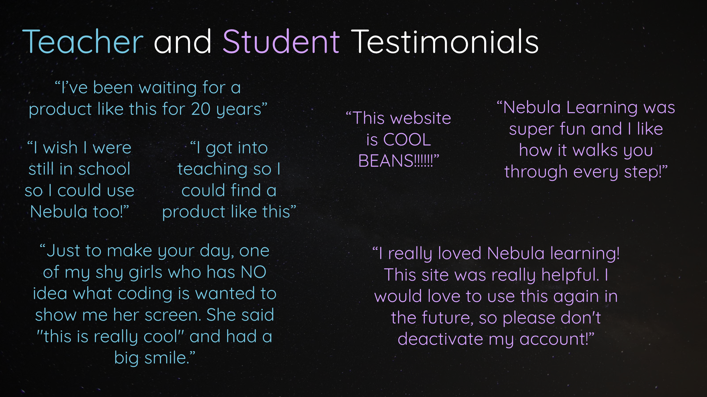

While it doesn’t have to be the most important consideration when building a new project, having users/customers who really love what you’re doing is often a major motivating factor for the people you’re working with (coworkers, investors, or otherwise) to keep going.
There’s certainly merit to building things primarily for yourself, but if you have users/customers who are thrilled with your work, it not only can inspire you when you’re questioning yourself, but even help convince others to join your cause into the future.
Toucan AI Customer Testimonial Video
This testimonial video was created with the much-appreciated help of Niki Shamdasani, the co-founder of Sani Designs and an early advocate of my latest company, Toucan AI:
Shopify Reviews of Toucan
The reviews seen here came from various customers of ours at Toucan throughout the years, all small business owners selling a variety of different products via e-commerce.

Nebula Learning Reviews
The reviews below were sourced from a group of teachers and students who used the Nebula Learning platform in a variety of public, charter, and private schools within their classrooms.
